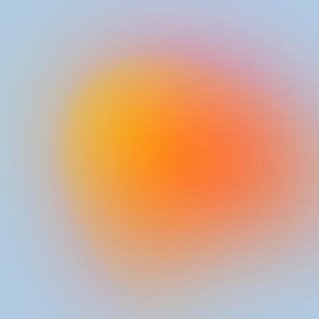

More of what you like
Related tracks
No items found.
The Upload
Newly posted tracks. Just for you

The Upload
Playlist · One track
Based on your listening history
Charts: Top 50
The most played tracks on SoundCloud this week
All music genres
Top 50
No items found.
Artists to follow
Refresh list
No items found.
Listening history
View all
No items found.
Liked tracks
View all
No items found.